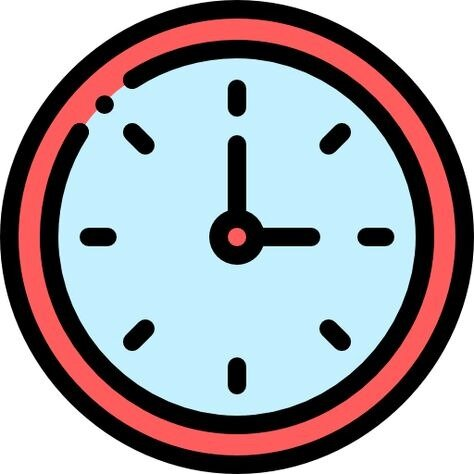
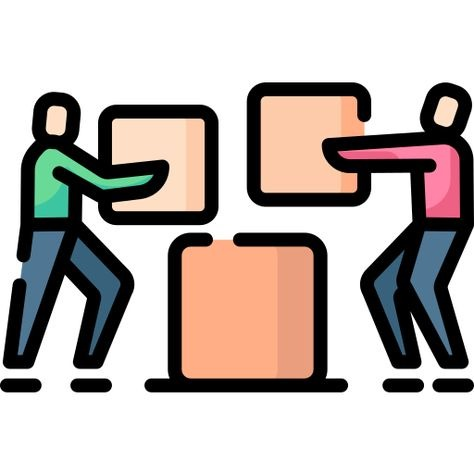

-
USAR LA Creatividad
La programación es tu mundo.Vos sos el creador y está en tus manos el poder para crear lo que quieras.Usar la creatividad es indispensable y recomendable, no hay LÍMITES para la IMAGINACIÓN
-
CADA QUIÉN A SU TIEMPO 
¡PACIENCIA MIJO! Cada persona tiene su ritmo al aprender.No te sientas mal porque alguien va más avanzado que vos,es más,pensá que si esa persona pudo vos también vas a poder.No hay edad para empezar a programar
-
TRABAJAR EN EQUIPO 
Para poder programar se trabaja en quipo para agilizar el trabajo.Es genial porque conocemos gente nueva podemos compartir ideas.Bonitos y GORDITOS muchachosCada persona es un importante y valioso miembro en el equipo.
-
EQUIVOCARSE ES APRENDER
Qué bronca cuando no le encontramos la vuelta al código.Es una frustración muy grande cuando no encontrás el error,pero todo se puede resolver.Así que ponete contento de que si te equivocaste,es porque lo INTENTASTE.
-
NO RENDIRSE
Dios mío... parece la parte más dificil. Luego de mil horas intentando,luego de 30 cafés en una noche me doy cuenta que esto no es para mí.Pero ,¿Y si te dijiera que estás equivocado? A veces en los momentos límites solemos dudar de nuestras cpacidades o pensamos que no somos buenos para nada.Es en ese momento donde tenemos que recordar que el error del código no me convierte a mí en un error.Así que no desesperes que todo tiene solución.Confiá en vos.Si el creador de facebook pudo,vos también.